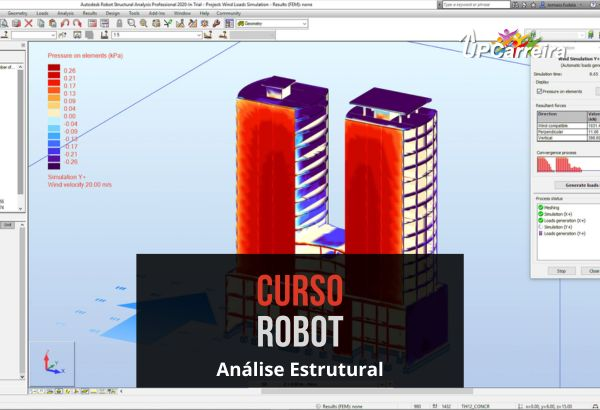

Curso Robot Structural na Prática - Concreto Armado NBR6118
Aprenda de uma vez por toda tudo que você precisa saber como fazer análise estrutural de concreto armado
Aprenda na prática o Software Robot e de uma vez por toda tudo que você precisa saber como fazer análise estrutural de concreto armado de acordo com a NBR6118
Se você é profissional formado, autônomo, recém-formado, estudante, e necessita de uma formação completa em software para projeto desenho e análise estrutural para dar um UP em sua Carreira.
"Muito bem explicado os passo a passo das atividades."
Diego M. - Engenheiro - ⭐⭐⭐⭐⭐
Objetivo do Curso

Aprenda na prática o Software Robot e de uma vez por toda tudo que você precisa saber como fazer análise estrutural de concreto armado de acordo com a NBR6118 2014 de casas, sobrados, edifícios.
O objetivo desse curso é ensinar ao aluno a utilização do software Robot para análise estrutural através de projetos reais na prática.
O Aluno Aprenderá os principais comandos do software e fará no final do curso um projeto completo de concreto armado de acordo com a NBR6118 2014, com todos os elementos estruturais, até fundação e memorial de cálculo de uma Escola.
Vamos lhe ensinar na prática os principais comandos do software através de projeto real de uma Escola com 3 Pavimentos.
Tenha uma Formação e Especialização Rápida no Software para análise estrutural de casas, sobrados, edifícios, BIM (Building Information Model) etc.
Crie designs resilientes e construtíveis conectados ao BIM
Robot Structural Analysis Professional é um software de análise de carga estrutural que verifica a conformidade do código e usa fluxos de trabalho integrados ao BIM para trocar dados com o Revit. Ele pode ajudá-lo a criar projetos mais resilientes e construtíveis que sejam precisos, coordenados e conectados ao BIM.
Crie projetos resilientes e construtíveis conectados ao BIM com o software Robot Structural Analysis Professional para engenheiros.
Para que serve o Robot?
O Robot é um Software de análise de elementos finitos
A análise de elementos finitos (FEA) é um método informatizado para prever como um produto reage a forças do mundo real, como vibração, calor, vazão de fluidos e outros efeitos físicos. A análise de elementos finitos mostra se um produto vai quebrar, se desgastar ou funcionar da maneira como foi projetado. Embora seja chamada de análise, no processo de desenvolvimento do produto, é usada para prever o que vai acontecer quando o produto for usado.
A análise de elementos (EA) divide um objeto real em um grande número (de milhares a centenas de milhares) de elementos finitos, como pequenos cubos. Equações matemáticas ajudam a prever o comportamento de cada elemento. Em seguida, um computador soma todos os comportamentos individuais para prever o comportamento do objeto.
A análise de elementos finitos ajuda a prever o comportamento de produtos afetados por muitos efeitos físicos, incluindo:
- Tensão mecânica
- Vibração mecânica
- Fadiga
- Movimento
- Transferência de calor
- Vazão de fluidos
- Eletrostática
- Moldes de injeção plástica
Para mais informações sobre o software Robot, visite o site oficial do robot.
Conheça o Professor do Curso
Claudio M. Antonio é um especialita em Softwares da Autodesk coomo Robot Structural Analysis Professional, Revit, já ensinou mais de 3.000 alunos a dominarem a ferramenta para projetos estruturais.
Depoimentos de Alunos
"O curso esta muito bom, e sim, era o que eu esperava. "
José Augusto Simplício V. - Engenheiro - ⭐⭐⭐⭐⭐
"Está ótimo , estou ansioso para dimensionar um projeto completo."
Lelio A. - Engenheiro Estrutural - ⭐⭐⭐⭐⭐
A Quem se Destina o Curso:
- Profissionais buscando aprofundar seu entendimento em análise de elementos finitos
- Estudantes de engenharia e áreas técnicas interessados em fundamentos confiáveis para análise
- Aspirantes aprofundando-se na área de elementos finitos, apoiados por softwares líderes do mercado
Benefícios
- Aprender na prática o Software Robot
- Fazer Cálculo de concreto armado de acordo com a NBR6118 2014
- Aprenda de uma vez por toda tudo que você precisa saber como fazer análise estrutural.
- Ganhar mais de R$2.000 em Bônus em Cursos Complementares
🎁 Oportunidade Imperdível - Bônus Limitado para Esta Turma! 🎁
Imagine ter acesso instantâneo a uma vasta coleção de apostilas digitais, planilhas de cálculos e NBRs comentadas, organizadas meticulosamente em mais de 30 Gigabytes de arquivos.
Esta biblioteca é uma ferramenta indispensável para facilitar suas consultas e aprofundar seus conhecimentos, sempre à distância de um clique.
E o melhor de tudo é que essa biblioteca está em constante atualização, assegurando que você tenha sempre as informações mais recentes ao seu alcance.
Você está prestes a dar um passo importante na sua jornada na área de Engenharia Civil com o Curso Robot. No entanto, não queremos que você perca a oportunidade única de adquirir o curso e ainda garantir um bônus especial que está disponível somente para esta turma. Este bônus vale mais de R$2.000, mas para você saira de GRAÇA Somente para Esta Turma!
Ao comprar o Curso Robot agora, você não apenas terá acesso a um conteúdo de alta qualidade que irá aprimorar seus conhecimentos em projetos estruturais, mas também receberá um bônus exclusivo que inclui uma Biblioteca Virtual repleta de recursos, Cursos Livres adicionais em temas essenciais como Empreendedorismo e Gestão de Projetos, além de acesso a ferramentas como o Sketchup e um curso 6 Sigma.
Este bônus é uma oportunidade única e limitada!
Não deixe para depois o que você pode conquistar hoje. Adquira o Curso Robot agora mesmo e assegure-se de não perder esse bônus excepcional. Sua carreira na Engenharia Civil merece essa valorização, e estamos aqui para garantir que você esteja preparado(a) para o sucesso.
🔥 Aproveite Agora e Garanta seu Bônus Exclusivo!🔥
Clique no botão abaixo e garanta seu acesso ao Curso Robot junto com o bônus especial antes que ele se esgote. Esta é a sua chance de elevar seu conhecimento e suas oportunidades profissionais a um novo patamar. Não perca essa oferta exclusiva!
Certificado
O Certificado tem validade para fins curriculares, provas de títulos (verifique no edital do concurso), atualização e aperfeiçoamento PROFISSIONAL, respeitando a carga-horária descrita.
Com ele você pode:
- Completar horas extracurriculares na faculdade;
- Preencher exigências em concursos públicos; (verifique no edital do concurso, se o mesmo aceita Cursos Livres)
- Participar de progressão funcional;
- Provas de título;
- Ou até mesmo para ascensão profissional.
Cronograma do Curso:
O Curso esta dividido em VideoAulas do Básico ao Avançado.
- Etapa de configuração da NBR6118
- Visualizar 12:23
- Arquivos do Curso e Link Download do Software 00:23
- Visualizar 07:59
- Configurações_do_Aço_1 08:21
- Configuração_Bitolas_Barras_de_Armadura_1 05:34
- Lajes_Configuração_Armaduras_1 13:25
- Aula Lajes Parte 1 05:05
- Lajes - Parte 2 05:05
- Configuração_Vigas 23:06
- Pilar 07:38
- Criar um Modelo Estrutural 1 05:47
- Inserir Coluna 05:53
- Inserir Vigas 02:54
- Criar Parede 04:54
- Criar Piso e Aberturas 02:40
- Copiando Elementos para os andares adicionais 02:02
- Alterações nos andares superiores 08:25
- Análise da Estrutura 14:26
- Calcular a Estrutura 16:34
- Aula 6.1 - Importanto o arquivo CAD 03:35
- Aula 6.2 - Inserir os eixos 02:15
- Aula 6.3 - Dimensões do Pilares 08:29
- Aula 6.4 - Inserir as colunas 14:24
- Aula 7 - Integração 10:54
- Aula 7.1 - Análise da Estrutura 11:28
- FAQs (Perguntas Frequentes) 00:06
- Catálogo de Novos Cursos Upcarreira 00:13
Perguntas Frequentes sobre o Curso:
- É um curso online e os módulos são postados conforme um cronograma?
?
- R: Sim, é um curso online e os módulos foram gravados em videoaulas de acordo com o cronogramado do curso seguindo cada etapa da análise estrutural.
- Qual o prazo de acesso ao Curso Robot Online? Pode fazer o download para backup?
- O Prazo de acesso ao curso por contrato é de 3 Anos de Acesso ilimitado a plataforma com videoaulas, arquivos do curso. Sobre o backup das aulas por questão de segurança dos dados e pirataria não temos essa modalidade para download.
- Os professores tem conhecimento do software?
- Resposta: Quem dará suporte a você é o Claudio Antonio especialista no Software Robot.
- Como farei para assistir às aulas? Posso assistir em qualquer horário?
- Resposta: O Curso esta disponível 24 horas e 7 dias da semana por um período de 1 ano. Você pode assistir em qualquer horário e quantas vezes quiser. Matricule-se Já e Dê um UP em sua Carreira.
- Posso assistir mais que uma vez a mesma aula?
- Resposta: Sim pode assistir mais de uma vez a mesma aula, pode assistir quantas vezes você quiser num período de até 1 ano.
- Qual o período de tempo de cada aula?
- Resposta: Em média cada Aula tem de 10 a 20 minutos, tem aulas que tem mais tempo, depende do assunto e conteúdo da aula.
- Qual a Carga Horário do Curso?
-
A carga hora do curso é 220 horas aulas equivalência em horas com um curos presencial.
- O que são os bônus especiais da Up Carreira?
- Resposta: São Curso extras gratuitos que complementam a sua carreira como gestão, administração, etc e consultoria de carreira com dicas de empregos e indicação das melhores agências de emprego para o seu setor.
- Vocês prestam o serviço de Consultoria no Software?
- Atenção: Não prestamos serviços (consultoria e/ou implementação)! Nosso curso é destinado a estudantes e/ou profissionais que queiram aprender sobre o tema com o objetivo de adquirir uma base para o desenvolvimento de seus estudos.
- Quem é a Upcarreira? Vale a pena estudar na Upcarreira?
- Estamos no mercado há mais de 12 anos, já formamos mais de 10.000 alunos no Brasil e Exterior. – Possuímos professores e profissionais experientes e especializados, sendo a maioria em nível de pós graduação, estamos empenhados em repassar/transmitir ao aluno seus conhecimentos da maneira mais fácil e prática possível, buscamos levar o aluno a explorar melhor sua capacidade de aprendizagem, e assim, obter mais qualificação em seu currículo. – Se você busca por especialização, capacitação ou atualização profissional, saiba que estamos preparados para atender as atuais exigências do mercado de trabalho, através de cursos práticos que visam o aprendizado significativo, bem como a aplicação dos seus conceitos do dia a dia do profissional. – Nossa missão é fazer com que nossos alunos tenham uma formação ampla e completa em menor tempo, através de cursos especializados nas principais áreas de atuação do mercado de trabalho. – Nossa visão é garantir cursos de qualidade que auxilie pessoas, de diferentes classes sociais, níveis acadêmicos e perfis tais como: alunos universitários, profissionais, professores e melhor idade, a alcançar e solidificarem uma carreira de sucesso impactando o crescimento econômico da nossa sociedade. – Compromisso com a qualidade de ensino e aprendizagem de modo que nossa sociedade tenha um maior número de profissionais qualificados e gabaritados em diferentes áreas de atuação. Adquira nossos cursos e treinamentos e comprove a qualidade do nosso ensino. Procuramos sempre nos aperfeiçoar com a ajuda de nossos alunos, professores e colaboradores.
- Quando começo a estudar? Informações sobre a Liberação e acesso ao curso!
- Assim que o sistema confirmar o pagamento seu acesso ao curso (login e senha) será enviado via e-mail, automaticamente. Normalmente no cartão de crédito no mesmo dia e boleto bancário 1 dia útil.
- Todos os cursos oferecem certificados?
- Resposta: Sim, ao final de cada um dos cursos o aluno tem direito a um certificado. A quantidade de horas cursadas, são válidas como atividades complementares ou extracurriculares em cursos de nível superior.
- Quais as Formas de Pagamento? É seguro o pagamento?
- Resposta: Sim, os pagamentos em nosso site são seguro, temos o certificado de segurança SSL que você pode comprar com o cadeado no canto inferior direito do seu navegador e o link como https, sites com esse sistema estão criptografados, ou seja, ninguém tem acesso das suas informações pessoais e do seu cartão de crédito por exemplo, somente você e sua operadora de cartão. Trabalhamos também com as maiores empresas do setor, como o pagar-me e ead checkout, pagseguro, paypal que tem grande segurança em negócios digitais, seu pagamento fica retido e só será transferido para a nossa empresa após confirmação que entregamos o curso a você.
- Qual o tempo de Acesso? Não tenho tempo para estudar, como vou fazer?
- Resposta: Nosso curso fica disponível para o aluno 24 horas e 7 dias da semana por um período, veja na descrição do seu curso o tempo de acesso, temos acesso ilimitado ao cursos para consultas após o período contratado. você pode estudar e rever as aulas quando quiser. A falta de tempo não é para não fazer nossos cursos, pois não limitamos o seu acesso antes do período de acesso ao curso e também não o forçamos a fazer o curso quando você não pode.
- Em média qual o tempo vou conseguir me formar no curso?
- Pela nossa experiência e prática inovadora de ensino, a formação dos nossos alunos costuma ser entre 30 a 90 dias, porém temos alunos, que por estudarem 1 hora por dia, conseguiram concluir o curso em menos de 1 mês e isso foi e é possível, graças a nossa didática de ensino. Se você precisa se formar em pouco tempo, isso é possível, basta seguir nosso cronograma de ensino.
- Método de Ensino - Modalidade a Distancia (Nota Importante)
- NOTA: Nosso método de ensino é voltado totalmente para modalidade a distância, prevendo o interesse, a capacidade de adequação, o desempenho e a responsabilidade do aluno em se dedicar aos estudos, conforme sua necessidade, respeitando sua forma de aprendizagem, por esse motivo nossos cursos não são indicados para alunos/pessoas que não se adequam ao ensino a distância, ou que não tenham a capacidade de aprendizagem sem a intervenção de um educador/professor.
- Vou realmente aprender com o Curso?
- Todas as aulas dos nossos cursos foram elaboradas cuidadosamente, passo a passo e na prática, utilizando projetos reais, onde o aluno assiste o conteúdo, replica no software o que foi ensinado pelo professor e havendo dúvidas, ele pode rever as aulas quantas vezes for necessário, até a assimilação do conteúdo ensinado. Acreditamos, que os alunos que se empenham em praticar o que é ensinado pelo professor, são capazes de aprender o curso, temos como base os nossos alunos que já concluíram o curso, a grande maioria (quase 90%)* aprova o nosso método de ensino. Leia os depoimentos dos alunos no site e comprove. * Pesquisa realizada em 2017
- Como funciona o suporte? Como eu Tiro as Dúvidas no Curso?
- Resposta: No geral o curso gera poucas dúvidas, pois trabalhamos com o método de ensino totalmente na prática, porém caso haja alguma dúvida pertinente ao curso, possuímos um corpo docente formado por professores especialistas nas áreas que ministram os cursos, muitos deles são mestres e doutores. Temos um canal do aluno com um banco de dados com várias perguntas já respondidas por esses especialistas, o aluno poderá consultar as suas dúvidas diretamente neste canal e também sugerir aulas para melhoria do curso caso a sua dúvida não seja encontrada neste canal, ela será analisada e sendo aprovada entra como aulas extras de melhoria do curso dentro do canal do aluno. O aluno poderá fazer a pergunta direta na plataforma, fazer a pergunta para os seus colegas de turma no fórum de dúvidas e também pode consultar o canal do Aluno com as Faqs (Perguntas e Respostas). Nosso suporte e atendimento é um dos nossos diferenciais de mercado.
- Qual a garantia que tenho matriculando no Curso?
- Sabemos da qualidade do nosso curso, você pode comprovar isso através dos depoimentos dos nossos alunos e os webnários gratuitos na seção do site mini cursos e aulas disponíveis no site como exemplo do curso. A Lei do Arrependimento no artigo 49 da lei do consumidor não se aplica a treinamentos iniciados ou já realizados.
- Qual a forma de pagamento?
-
Aceitamos todas as formas de pagmaento: Cartão de Crédito em até 12X, PIX, boleto bancário.